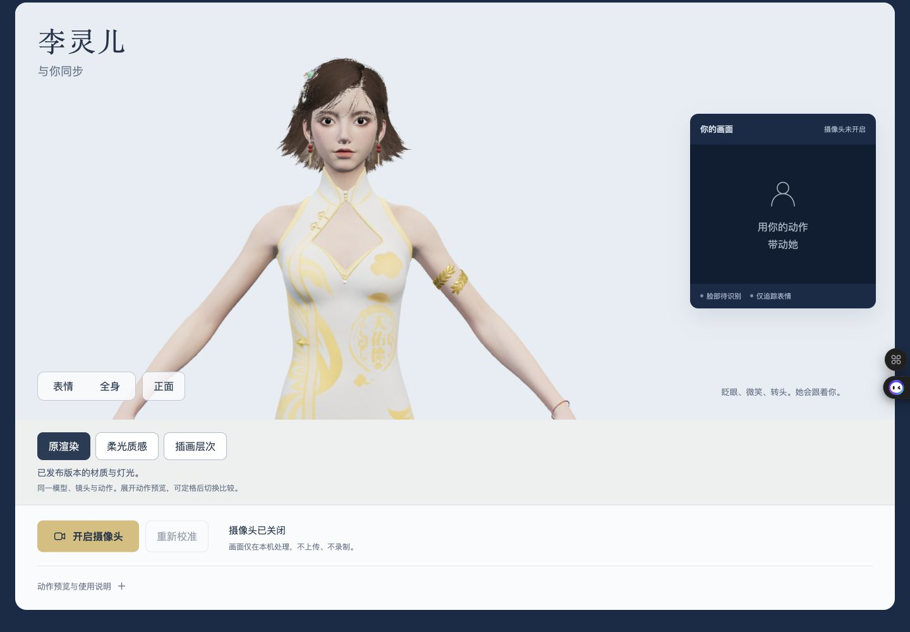

同一角色 · 同一模型 · 同一镜头
换一种光，
看见她的层次。
原渲染、柔光质感与插画层次，保留李灵儿的脸、服装和动作。先比较，再决定。
独立审阅候选，尚未选定或替换线上默认。进入页面不会自动开启摄像头。
先看同镜头对照
2026-10-17 已验静帧已发布版本的材质与灯光，作为比较基线。

左侧原渲染 · 右侧原渲染。静帧来自上一轮真实浏览器验收，不是本轮重新渲染。
查看当前版本完整截图
再用同一个动作检查
- 进入三维比较，选择“表情”或“全身”。
- 展开“动作预览与使用说明”，选择挥手或微笑，然后“定格预览”。
- 切换三个渲染按钮，比较脸颊、头发、金饰和衣料；动作与镜头应保持。
摄像头流程保留，只有点击“开启摄像头”才会请求使用。本轮不采集新的人脸或动作。
留下这次审阅意见
临时意见只用于这次审阅，不会写入项目；导出文件由你保存，不会发送或发布。
哪些已经核验
- 上一轮真实画面
- 三路同模型与镜头、挥手及微笑定格，电脑与手机竖横视口已有记录。
- 本轮新增
- 修复版已完成桌面与三种手机视口的Chrome复测；真人摄像头和实体iPhone Safari仍未验证。
- 仍未验证
- 真人摄像头、实体 iPhone Safari、设备帧率、耗电及长时稳定性。
柔光可继续完善，白衣仍偏平，发际与发梢颗粒仍在。插画明暗较硬，是风格候选。截图存在不代表已被采用。